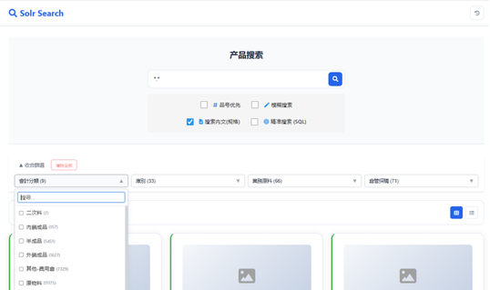
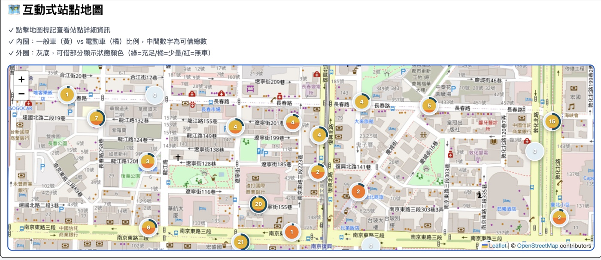
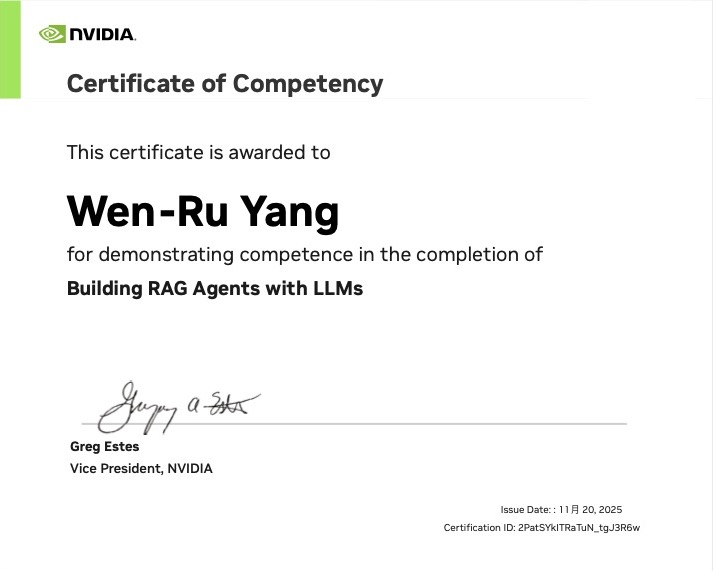
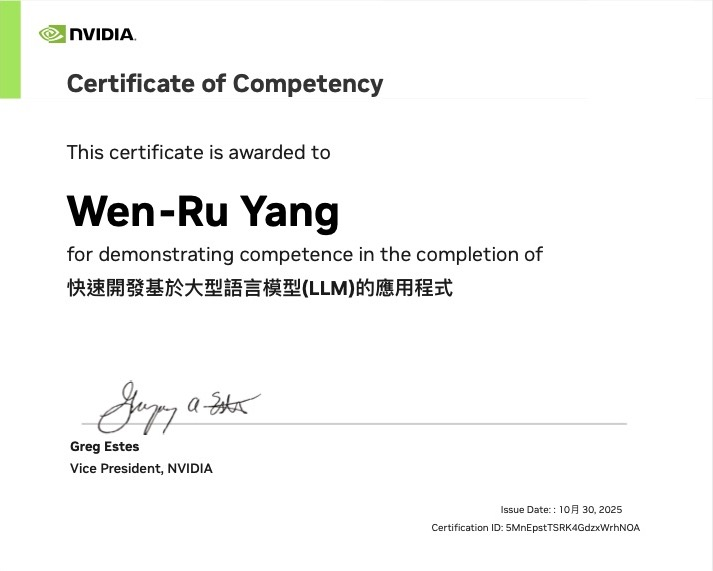
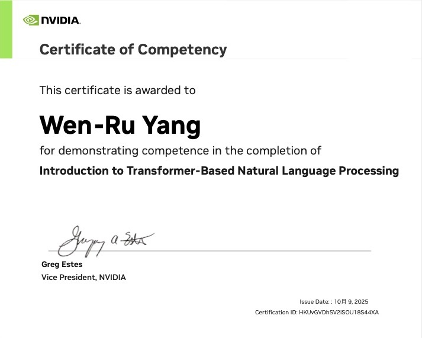
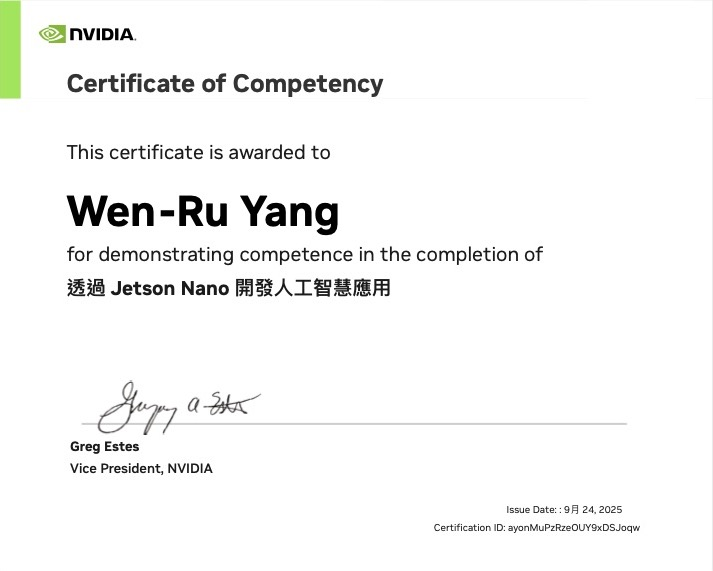
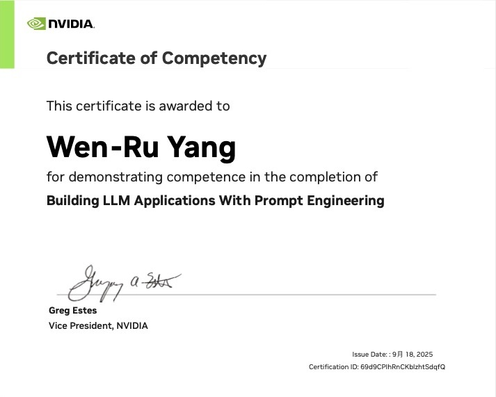
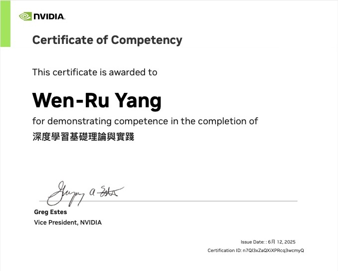

2026/02 – 2026/05
人工智能股份有限公司
GAI 實習生
參與客戶需求討論、文件處理、RAG 系統實作與模型測試，接觸企業 AI 導入情境。
ABOUT ME
具金融科技研究背景，關注軟體開發、資料整合與 AI 應用。 研究聚焦 ESG 非結構化資料與 LLM／RAG， 並持續累積 API 串接、資料庫 CRUD 與服務部署的實作經驗。
希望參與產品型團隊，結合領域知識與程式能力， 在實際需求中累積系統設計與工程經驗。
TECHNICAL SKILLS
SELECTED PROJECTS
建立可長期運作的設計知識庫，改善版本混亂問題； 提升設計稿重用與跨部門溝通效率，加速業務提案。
建立大數據資料庫搜尋引擎，提升產品搜尋效率與精準度； 改善同品項重複建立料號、庫存難以控管的問題。
Solr 模糊搜尋時間縮短 92%：1.83 秒 → 0.15 秒

探討永續報告、新聞與法規等資料在 LLM／RAG 中的應用， 以降低幻覺、提升來源可追溯性為研究目標。
串接 YouBike 開放資料，呈現站點與車輛資訊， 並開發地圖及起訖點路線查詢功能，探索日常通勤的使用情境。

使用 Unity 與 3ds Max 製作，擔任技術美術與 3D 製作。 了解廠商需求並提案，四個月內完成從開發、提案到 VR 遊戲雛形展示。
使用 Unity 製作的 2D 遊戲，擔任技術美術與企劃。 探討嚴肅遊戲的娛樂性與正向影響，除了娛樂體驗， 也讓玩家透過遊戲認識心理現象中的制約，以及它如何被運用成潛在習慣。
EXPERIENCE
GAI 實習生
參與客戶需求討論、文件處理、RAG 系統實作與模型測試，接觸企業 AI 導入情境。
IT 實習生
EDUCATION
金融科技碩士
研究方向：ESG、LLM 與檢索增強生成。
前端工程師教育培訓班
數位多媒體設計系 設計學士
CERTIFICATIONS






AIS3 MyFirstCTF（2026/05）、Secure Code Warrior Tournament（2024/06）
GET IN TOUCH
求職方向：軟體工程／AI 應用開發
Email：youk2333@gmail.com